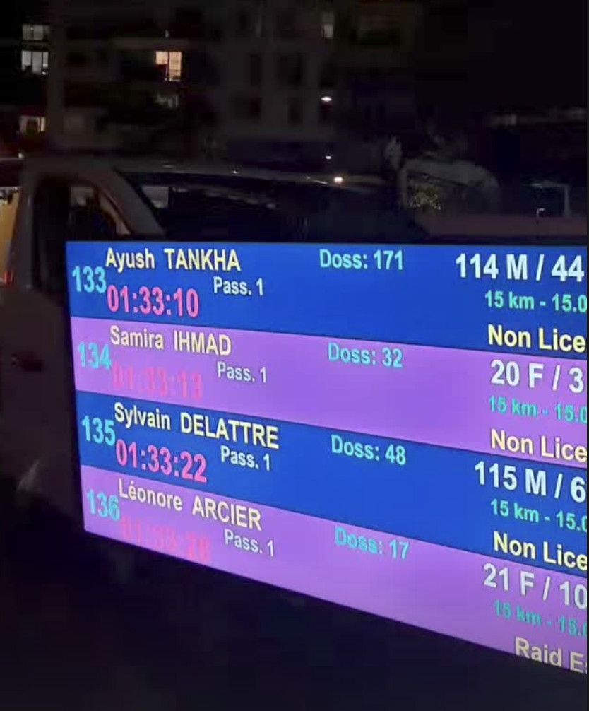
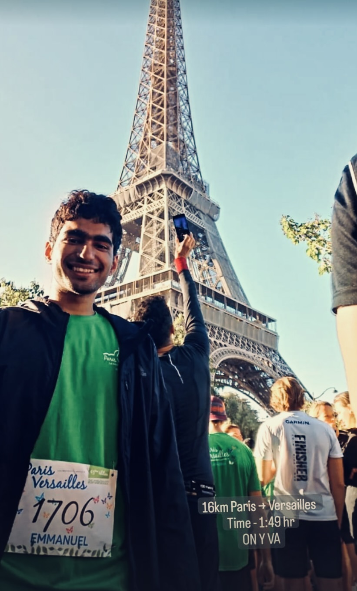
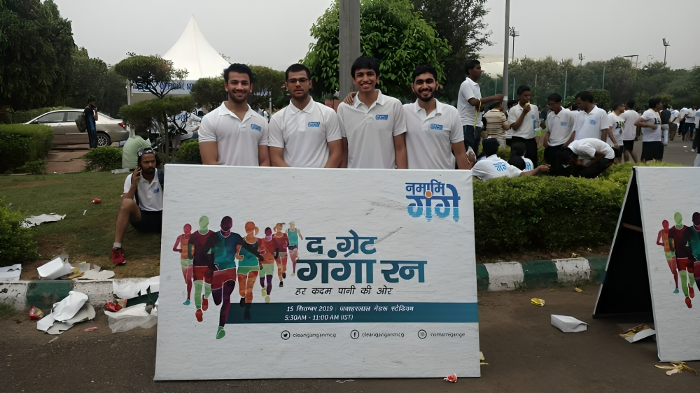

Participating in this year's Paris Marathon was an incredible experience. The event, which took place on April 2nd, brought together the worlds of sports and beauty as I journeyed through some of the most iconic spots in the heart of the French capital.
All in all, being a part of this year's Paris Marathon has given me not only a sense of accomplishment but also a unique connection to the upcoming Olympic events. Running through these historic streets and iconic locations is an experience I'll always cherish.

A very enthralling run and my very first experience to run at night. I would like to thank RAID ESSEC for organizing such a great event. All of us had to put a headlight for navigation and were also provided refreshments at the end.
The route had stairs, slopes and forest trails which made the night run more interesting and challenging at the same time. The volunteers constantly guided us in the correct directions in the pitch dark forests which and I am really thankful to their contribution as well.

My very first run in Paris and a memorable one in itself.Organized by Paris-Versailles Association, it takes place on a course of 16 km, from the foot of the Eiffel Tower to the Palace of Versailles, via Issy-les-Moulineaux, Meudon, Chaville, Vélizy-Villacoublay, Viroflay and Meudon.
Really thankful to CentraleSupelec which had partnered with the organizers of the event and helped us out in getting the bibs and also the post run refreshments. It was a challenging run because it had a large section of steep slopes.

Namami Gange event was organized by the National Comission for Clean Ganga in Delhi. I saw people come together in this run to get a closer connection towards the cause of 'Clean Ganga River'.
For those who are unaware of the importance of the Ganga river in India , here is a short summary -
The Ganges River is considered sacred in Hinduism and is worshipped as the goddess Ganga. It plays a central role in the lives of millions of people, serving as a source of water for drinking, agriculture, and other purposes. The Ganges is not only a physical river but also a spiritual and cultural icon. It has been referenced in various mythological and religious texts and is associated with rituals, festivals, and ceremonies. Many Hindu pilgrims visit the river to perform religious rituals, including taking a holy dip to cleanse themselves of sins.
However, the Ganges also faces environmental challenges such as pollution and water quality degradation due to industrial waste, sewage, and other factors.